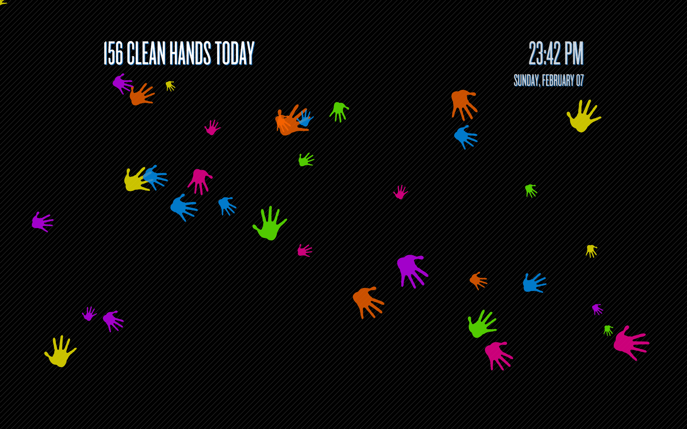
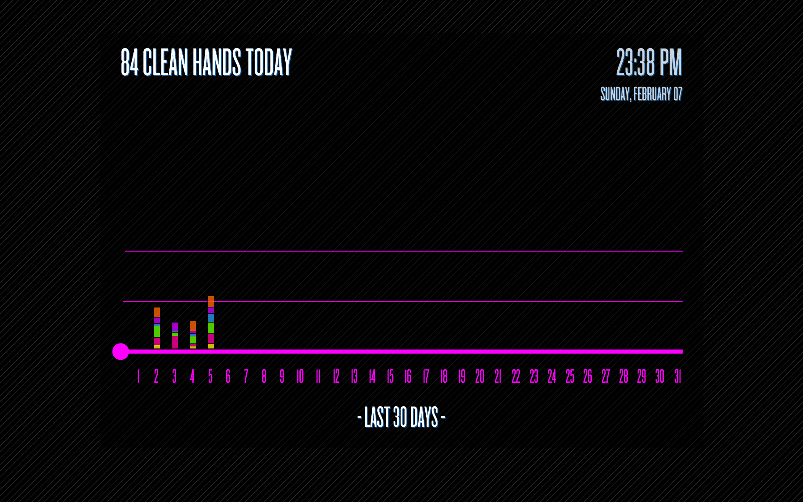
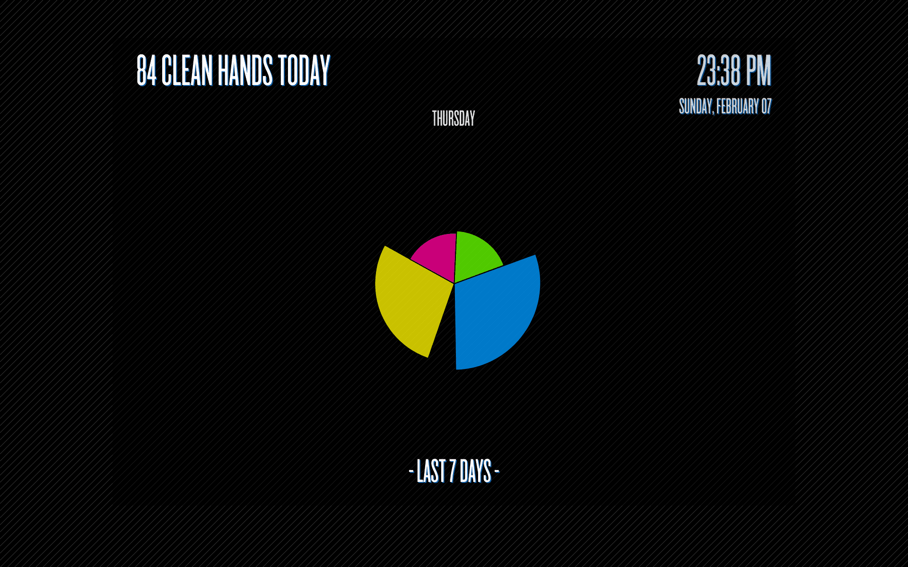
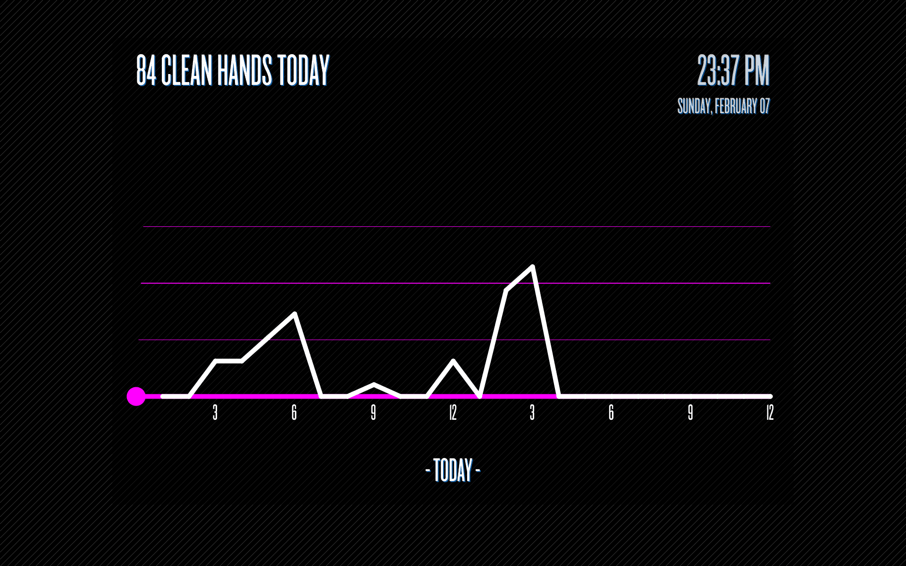
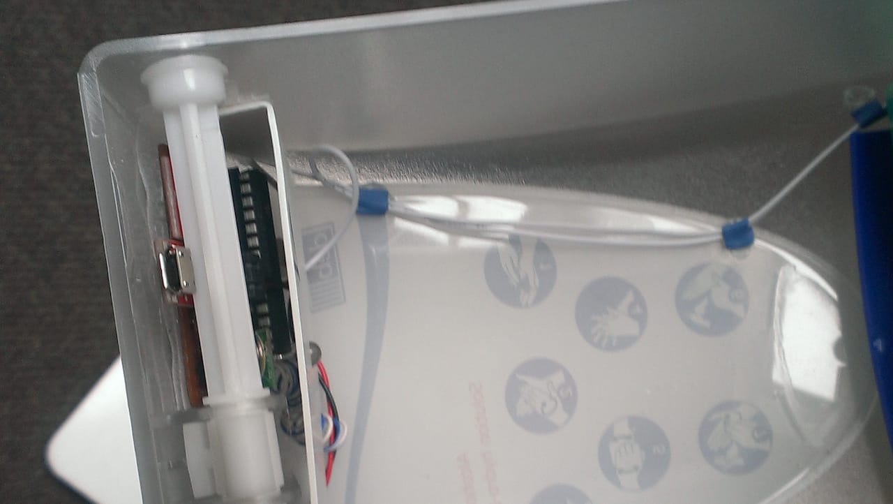
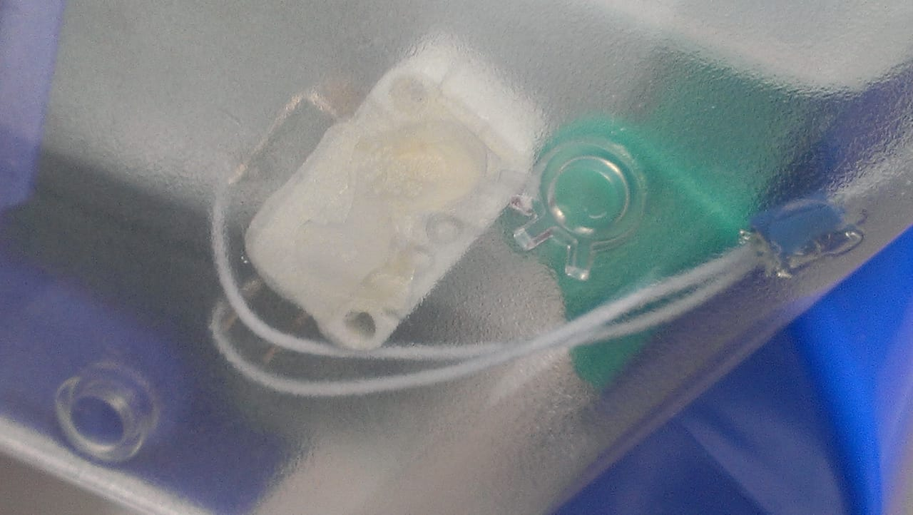
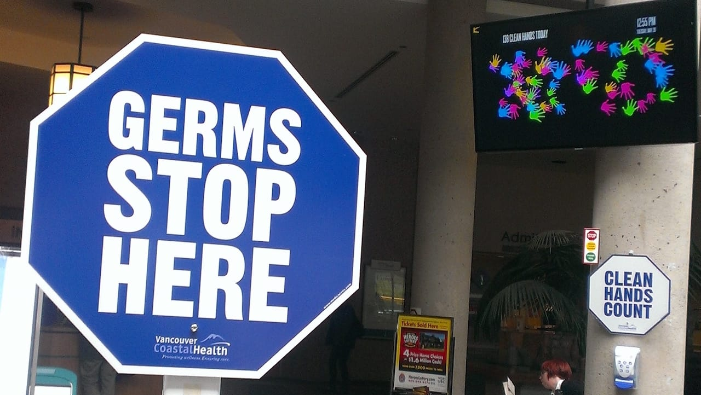
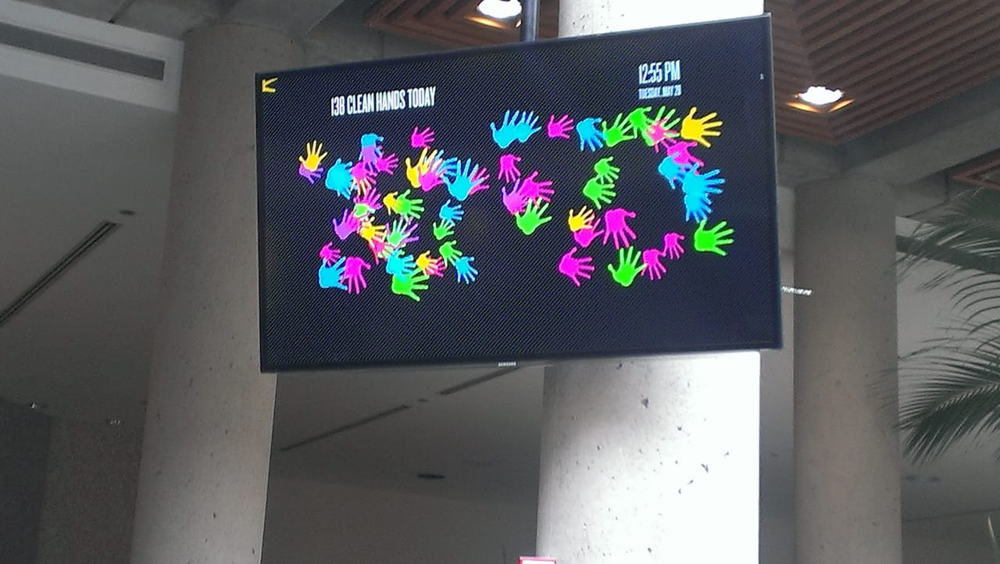

Hand Sanitizers was an Interaction Design project at
Emily Carr University of Art + Design,
for the
Health Design Lab,
in a project led by
Jonathan Aitken
and
Haig Armen.
The installation consisted of 6 networked sensors installed within hand sanitizer dispensers, with each of them, when dispensed,
sending a message to a host
Arduino
board with a unique ID.
The Arduino would parse the message and pass it along to a computer running a customized
Processing program,
which would animate a visual and auditory cue, gamifying the experience of cleaning your hands.
The program would also save the timestamps of each trigger, and have hourly, daily, weekly, and monthly visualizations,
which would display after an inactive period, and was also exported for the Hospital administrators to view,
so that they could quantify the effectiveness of the interaction.
My role involved assisiting in the technical installation, consulting on the technical stack and design experience,
and primarily underwriting the Processing software.
The project page can be seen at
Hand Hygiene Project
and the source code can be found on my GitHub.







